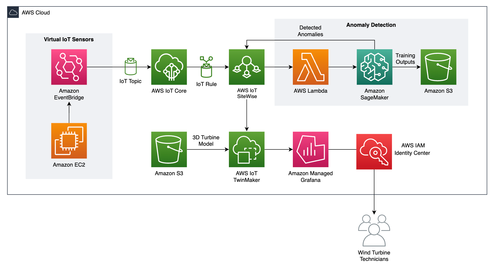

About Me

Hello! My name is Kaylee, and I am a fourth-year student at The University of Texas at Austin. I started out my college
career as a journalism and communication honors student, but I quickly learned that wasn't the field for me and that I wanted
to pursue a more technical major. I am currently working toward a Bachelor of Science in Computer Science and a minor in
Korean, and I am expected to graduate in December 2024.
Within computer science, I am most interested in ML/AI and data science, cloud engineering, and software engineering.
I am currently seeking internship opportunities for Summer 2024 in any of my areas of interest, but I am willing to
explore other fields as well.
In my free time, I love playing video games with my friends, keeping up with esports, creating digital art, cooking and baking,
and hiking. And here are some new things that I've heen doing recently:
- Studying for my AWS Solutions Architect certification
- Exploring my temporary home, Seattle!
- Learning how to boulder with my girlfriend
Experience
Amazon Web Services - Solutions Architect Intern
I am currently an intern at AWS, and my summer project is to create a digital twin for wind turbines based on data
from their IoT sensors and detect anomalous sensor data using the random cut forest anomaly detection algorithm. To
do this, I have built out the following architecture in AWS:

Alongside my project, I am exploring the computer vision tools that AWS has to offer and replicating the object
detection work that I have done for my university's RoboMaster team in AWS Rekognition and SageMaker. My job
responsibilities also include conducting mock customer conversations and shadowing real ones.
The University of Texas at Austin - Undergraduate Teaching Assistant
During the school year, I am a teaching assistant for CS 312 (Introduction to Programming) because I am very passionate about
helping first-time programmers learn the programming fundamentals they need to succeed in my university's computer science
department, especially since I was in their seat two and a half years ago. As an undergraduate TA, I lead weekly discussion
sections, assist with lecture activities, host biweekly office hours and weekly assignment design sessions, answer questions
on the class Piazza forum, and grade assignments and exams.
H-E-B - Data Infrastructure Intern
Last summer, I was an intern at H-E-B on the cloud data platform team. My summer project was to provide capacity planning
predictions for on-premises MySQL servers and send alerts to database administrators if resource utilization was projected
to surpass certain thresholds. I queried historical time series data about the MySQL servers from the performance monitoring
application New Relic, stored it in Amazon S3, and used Holt-Winters forecasting to predict future resource utilization based
on historical patterns. This role introduced me to the idea of cloud computing for the first time, and it also provided me
resources to learn about machine learning and deep learning in my downtime at work.
Developmental Intelligence Lab - Undergraduate Research Assistant
My first job after switching career paths was as a research assistant in a child development research lab at my university led
by Dr. Chen Yu. I initially started out primarily assisting with pre-processing video/audio data and transcribing audio.
However, I soon was introduced to the field of computer vision and trained detectron2 and YOLOv4 object detection models to
automate video data labeling. I also assisted with fixing FFMPEG scripts used in the video/audio pre-processing pipeline.